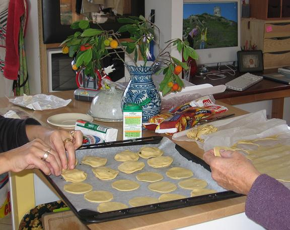

Recette n°103 :
Petits feuilletés au
chèvre et au basilic comme chez Marie-Hélène

Ingrédients :
- deux rouleaux de pâte feuilletée toute faite
- un fromage de chèvre en forme de buche
- une vingtaine de feuilles de basilic
- un jaune d'oeuf
Préparation :
- étaler la pâte et y découper une vingtaine de
disques à l'aide d'un verre à boire
- préchauffer le four à 220C, en retirer la plaque
- éplucher le fromage au cas où les convives n'aiemraient
pas en manger la peau
- débiter le fromage en dix rondelles
- sur la plaque du four disposer une des feuilles de papier des
rouleaux de pâte
- sur ce papier disposer dix disques de pâte
- sur chacun de ces disques, disposer une rondelle de fromage et une
feuille de basilic
- recouvrir chacune des dix "tartines" ainsi constituées d'un
disque de pâte et border en pinçant
- badigeonner de jaune d'oeuf et enfourner
- surveiller la cuisson car c'est très rapide (15 à 20 mn)
- servir chaud avec une salde verte
Observation :
Recette xécutée à Porticcio le 6 nocvembre 2006 ;
excellente !